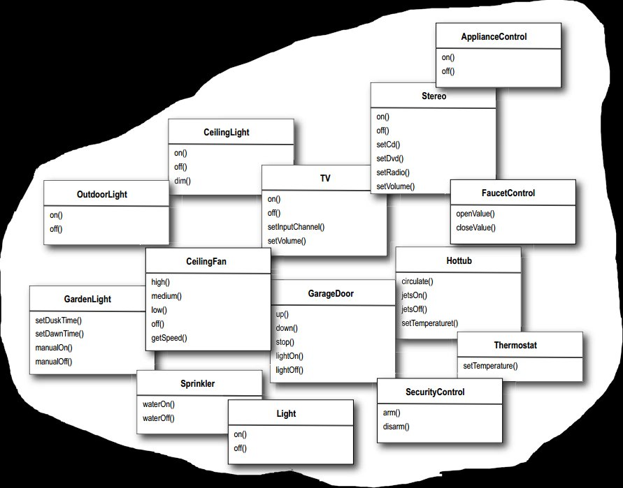

浅谈设计模式七: 命令模式(Command)
Table of Contents
实例
有一个远程控制器，上面有很多按钮，每个按钮分配不同的功能，比如打开客厅灯，关闭客厅灯，调高风扇的风力，关闭风扇等。那么整个家庭会有如下那么多的控制对象，如何很好的维护，易扩展，易独立改变呢？ 
命令模式(Command)
目的
把一个请求封装成一个对象，因而可以让你通过不同的请求，队列或日志请求来参数化客户，并且支持撤销操作。
实现
- 定义命令类接口
class Command { public: virtual void execute() = 0; virtual void undo() = 0; };
- 每个设备定义自己的功能类
如灯的控制：
class Light { public: explicit Light(string location); virtual ~Light(); void on(); void off(); void dim(int level); int level(); private: string location_; int level_; };
- 对每个设备封装各自的具体命令类，实现命令接口
如灯的开命令类：
class LightOnCommand : public Command { public: explicit LightOnCommand(Light* light); void execute(); void undo(); private: Light* light_; int level_; };
灯的关命令类：
class LightOffCommand : public Command { public: explicit LightOffCommand(Light* light); virtual ~LightOffCommand(); void execute(); void undo(); private: Light* light_; int level_; };
- 定义远程控制器（调用者）
RemoteControl类用数组存储各个命令，映射到控制按钮器各个按钮上。class RemoteControl { public: RemoteControl(); virtual ~RemoteControl(); void setCommand(int slot, Command *on_command, Command *off_command); void onButtonWasPushed(int slot); void offButtonWasPushed(int slot); void undoButtonWasPushed(); string toString(); private: Command* on_commands_[7]; Command* off_commands_[7]; Command* undo_command_; };
总结
命令模式(Command)结构

组成
- 命令(Command) 为执行一个操作声明一个接口
- 具体命令(ConcreteCommand)
- 在命令接收对象与操作间定义一个连接
- 通过在接收者引起相应的操作来实现执行操作
- 客户(Client) 创建一个具体的命令对象并设置它的接收者
- 调用者请求命令对象执行请求
应用场景
- 通过调用来更改对象的参数，类似注册一个回调函数，解耦调用者和接收者。
- 指定请求，排队请求或执行请求在不同时间。命令模式对象生命周期可以独立于原请求。
- 支持撤销请求操作。
- 支持记录变化，使得系统崩溃时能重新应用之前的变化。也就是恢复操作。
- 支持事务处理。一个事务封装对数据的一系列的变化.命令类有一个共同的接口，可以让你同一方式调用所有的事务。
协作
 上图显示这些对象之间的交互。它阐明了命令设计模式如何把调用者从接收者中解藕出来。
上图显示这些对象之间的交互。它阐明了命令设计模式如何把调用者从接收者中解藕出来。
- 客户类创建一个具体的命令对象并指定它的命令接收者。
- 调用者对象存储好这个具体命令对象。
- 调用者通过命令类的执行函数发出一个请求。当命令对象支持撤销时，具体命令对象在调用命令前，存储当前的状态以备撤销命令。
- 具体命令对象再它的接收者那调用操作来执行之前的请求。